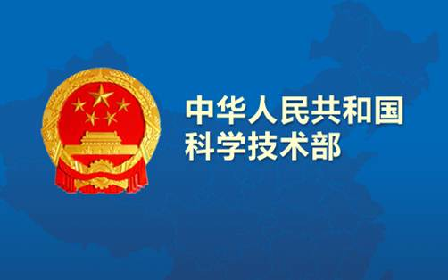
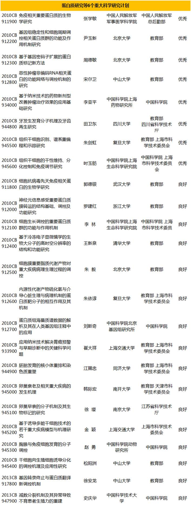

日前科技部公布了2014年结题的141项973计划的验收结果，以本课题组周德敏教授为首席科学家的蛋白质研究重大科学研究计划“基于基因密码子扩展的蛋白质标记新方法”被评为优秀。这是继2013年我院张强教授领衔的973获得优秀结题后又一优秀结题的973项目。
基于基因密码子扩展的非天然氨基酸标记技术，是国际上新兴的蛋白质科学研究方法。该项目组通过化学-生物学学科交叉，发展了国际领先的蛋白质标记技术，实现了在更短的时间内、更小的空间里、更精确地描述生命过程及活动，从而抢占国际蛋白质研究新技术新方法的先机。特别是周德敏教授课题组通过优化基因密码扩展技术，建立了温和、快速、高效、定量和特异的蛋白质定点修饰方法，包括蛋白质药物的定点PEG化、ADC药物定点偶联和基因治疗用病毒载体定点靶向修饰等，为实现生物大分子药物从异质走向均一的跨越提供了关键技术突破。
该项目以北大医学部、北大化学学院和中科院生物物理所35岁左右的青年科学家为主组成，10位PI中涌现出3位国家杰出青年基金获得者、1位获教育部长江学者、2位中国青年科学家奖获得者，三十多人次担任国内外著名期刊任主编、副主编或编委。五年来研究取得了一批具有国际影响力的原创性成果，发表SCI论文120多篇（在IF>10和学科顶尖杂志发表的论文占一半，包括Nature系列7篇），申请国内外专利23项，取得多个一类生物候选药物。这些成果表明本课题组在承担和完成国家重大科研任务的能力在继续加强，同时也表明本室在继核酸、糖内源性大分子研究之后，蛋白质研究也取得了长足进展。
延伸阅读：
科技部：2014年973计划验收结果（生物医学领域）
（http://news.bioon.com/article/6673057.html）

近日，科技部按照《国家重点基础研究发展计划（973计划）管理办法》和《国家重点基础研究发展计划专项经费管理办法》有关规定，完成了973计划（含重大科学研究计划）2010年立项137个项目、2012年立项2个项目和2013年立项2个项目的结题验收。现将项目验收结果通知如下：
1.“主要农作物核心种质重要农艺性状单元型区段及互作研究”等141个项目自立项实施以来，总体执行情况较好，达到了预期目标，予以通过验收。
2.“棉花纤维品质功能基因组研究及优质高产新品种的分子改良”等44个项目验收结果为“优秀”；“重要养殖鱼类功能基因组和分子设计育种的基础研究”等97个项目验收结果为“良好”。
3.“高效规模化太阳能热发电的基础研究”等17个项目财务验收结果为通过财务验收（优秀），“主要农作物核心种质重要农艺性状单元型区段及互作研究”等124个项目财务验收结果为通过财务验收。
生物谷小编将生物医药领域通过2014年973计划（含重大科学研究计划）的项目整理如下：
